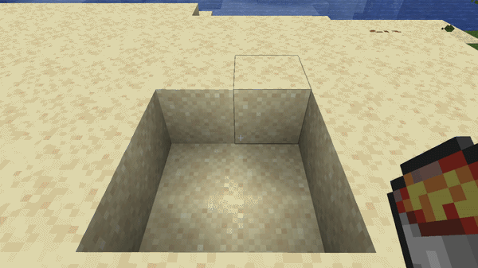
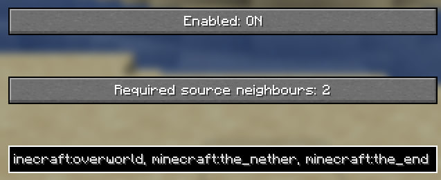

Place lava
Put two lava source blocks diagonally inside a 2×2 area, just like you would when creating an infinite water source.
Demo
Renewable sources are created through the same familiar neighbour-based concept used by vanilla water, without changing lava flow speed.

How it works
Put two lava source blocks diagonally inside a 2×2 area, just like you would when creating an infinite water source.
Lava spreads normally. Once a flowing block has enough horizontal source neighbours, it becomes a source itself.
Once the pool is filled with source blocks, you can collect lava and valid missing sources regenerate naturally.
Example
Start
Renewable pool
Behavior
Source generation is based on nearby horizontal lava source blocks rather than custom pool shapes or artificial fluid simulation.
Renewable behavior is not limited to 2×2 pools. Larger source pools can regenerate individual missing blocks when the neighbour requirements are satisfied.
Lava keeps its normal flow speed, water interactions, bucket behavior, and other vanilla mechanics.
Source creation is controlled by the server, making the mechanic suitable for both singleplayer and multiplayer worlds.
Configuration
Renewable Lava includes lightweight server-side configuration and per-world control. Fabric users can also edit the main settings directly through Mod Menu.
